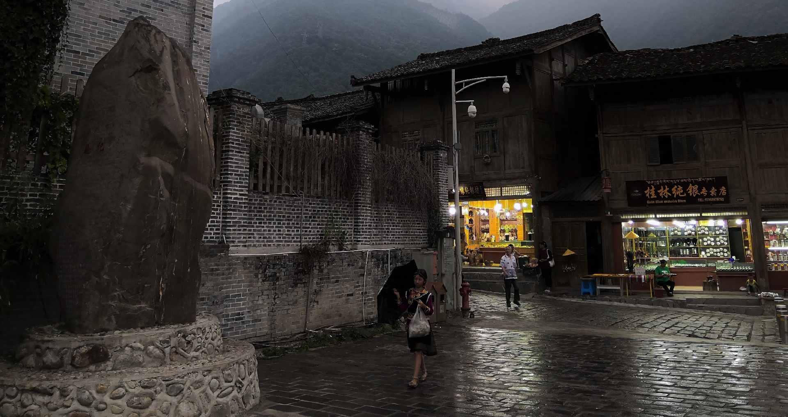
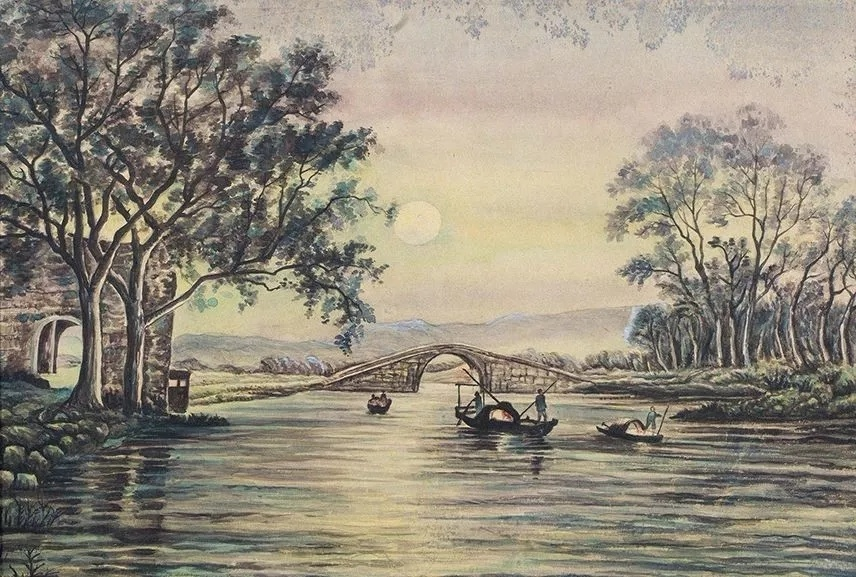
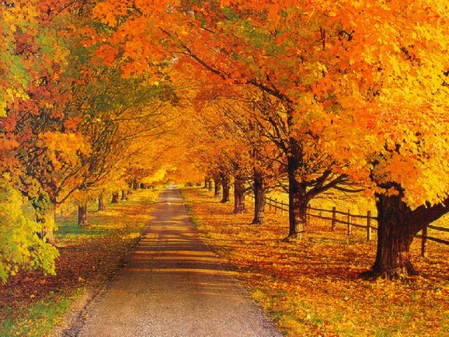

<link rel="stylesheet" href="../css/blog.css">
<!-- If you'd like to support IE8 -->
<script src="http://vjs.zencdn.net/ie8/1.1.2/videojs-ie8.min.js"></script>

<section class="inner">
  <div class="pidex">
    <blockquote>
      <h3>人生的本质是诗意的，人应该诗意地栖息在大地上。</h3>
    </blockquote>
  <div>
</section>
<div class="spacer"></div>


<section  class="inner">
  <a href="https://www.ucdavis.edu/">
    
  </a>
  <h2>戴村秋景</h2>
  <p><strong>Author:</strong> Gang Chen</p>
   <p>红叶微风秋意浓，</p>
   <p>白云高塔诗情悠。</p> 
   <p>无尽良田原野阔，</p> 
    <p>万千学子书山游。</p>
</section>
<div class="spacer"></div>


<section  class="inner">
  <a href="https://www.lonelyplanet.com/usa/california/south-lake-tahoe-and-stateline">
    
  </a>
  <h2>忆游太浩湖</h2>
  <p><strong>Author:</strong> Gang Chen</p>
   <p> 雪山巍峨，白云缥缈，</p>
   <p>随处岁月青松，不改苍劲本色；</p>
   <p>天高无极，鹰击长空，</p>
   <p>纵然千里碧波，我自湖色相怡。</p>
 
</section>
<div class="spacer"></div>


<section  class="inner">
  <a href="https://www.xuehua.us/2018/10/02/%E5%8E%86%E4%BB%A3%E5%92%8F%E5%AD%A4%E9%9B%81%E8%AF%97%E8%AF%8D%E7%B2%BE%E9%80%89%E4%B8%80%E5%8D%81%E5%85%AB%E9%A6%96-%E8%8A%B3%E8%8D%89%E5%B7%B2%E4%BA%91%E6%9A%AE%EF%BC%8C%E7%A7%8B%E9%9B%81%E5%8F%88/">
    
  </a>
  <h2>孤雁</h2>
  <p><strong>Author:</strong> Gang Chen</p>
  <p>孤雁不饮啄，飞鸣洞碧霄；</p>
  <p>尤见一片影，相伴万重云；</p>
  <p>衡阳声未段，难寻旧沧海；</p>
  <p>野鸭无意绪，鸣噪自纷纷。</p>
 
</section>
<div class="spacer"></div>

<section  class="inner">
  <a href="https://www.medicalnewstoday.com/articles/284378.php">
    
  </a>
  <h2>浮生记梦 </h2>
  <p><strong>Author:</strong> Gang Chen</p>
  <p>若水三千难为水，沧海茫茫诉曾经；</p>
  <p>万千烟云轻似梦，巫山无尽风雨情。</p>
 
</section>
<div class="spacer"></div>


<section  class="inner">
  <a href="https://thewordcastle.com/2018/04/10/ill-still-be-the-moon-she-said-poetry/">
    
  </a>
  <h2>望月 </h2>
  <p><strong>Author:</strong> Gang Chen</p>
  <p>夜凉如水，村里的月光照亮回忆，仿佛昨日重现；</p>
  <p>白月悠悠，漫天的星辰穿越千古，依稀留住时间；</p>
 
</section>
<div class="spacer"></div>


<section  class="inner">
  <a href="https://www.zhongguofeng.com/fengjing/6443.html">
    
  </a>
  <h2>夜战 </h2>
  <p><strong>Author:</strong> Gang Chen</p>
  <p>夜阑卧听风吹雨，</p>
  <p>梦里江山似故乡；</p>
  <p>谁叫此生漂泊志，</p>
  <p>淡看烟云醉星辰。</p>
 
</section>
<div class="spacer"></div>


<section  class="inner">
  <a href="https://zhuanlan.zhihu.com/p/72129900">
    
  </a>
  <h2>夜半宽慰友人 </h2>
  <p><strong>Author:</strong> Gang Chen</p>
  <p>秋月无声冷异城，半帘西风夜色深；</p>
  <p>浮萍本是无根木，迁客何必寄相思。</p>
  <p>不见流云追星辰，千载悠悠不肯息；</p>
  <p>劝君更进一杯酒，明朝西岸起烽烟。</p>
 
</section>
<div class="spacer"></div>


<section  class="inner">
  <a href="https://pxhere.com/zh/photo/1324452">
    
  </a>
  <h2>洞仙歌•夕阳唱晚 </h2>
  <p><strong>Author:</strong> Gang Chen</p>
  <p>斜阳暖处，秋水共长天。</p>
<p>玉树无声衬流云。</p>
<p>西风起、惊起红叶轻舞，原野阔，唯有梧桐相伴。</p>
 <p> 乡村向晚，路灯鸣唱，异域佳人似惊鸿。</p>
 <p>转角处，夕阳将尽。</p>
 <p>更携取、踩霞登楼，回首处，秋风萧瑟，不见天涯路。</p>
</section>
<div class="spacer"></div>